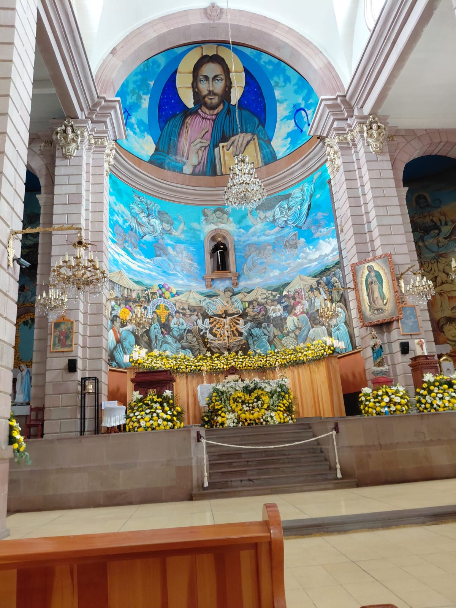

Iglesia de la virgen de Guadalupe.
DIRECCIÓN: Godines Tehuastepec.
Se celebra el 12 de Diciembre en honor a la virgen de Guadalupe.

Iglesia San Juan Diego.
DIRECCIÓN:El fresno
Se celebra el 8 de Diciembre en honor a San Juan Diego.

Iglesia Santa Maria
DIRECCIÓN:Santa Maria Valle de Bravo.
Se celebra el 3 de Mayo a Cristo Negro.

Iglesia San francisco de Asis
DIRECCIÓN:San francisco de Asis Valle de Bravo.
Se celebra el 4 de Octubre a San francisco de Asis